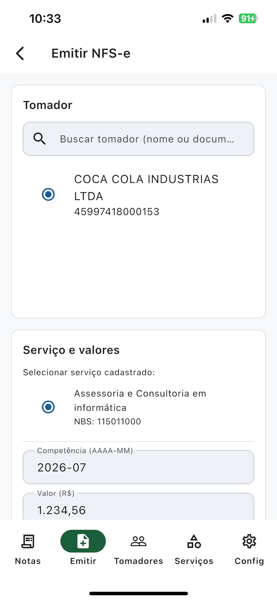
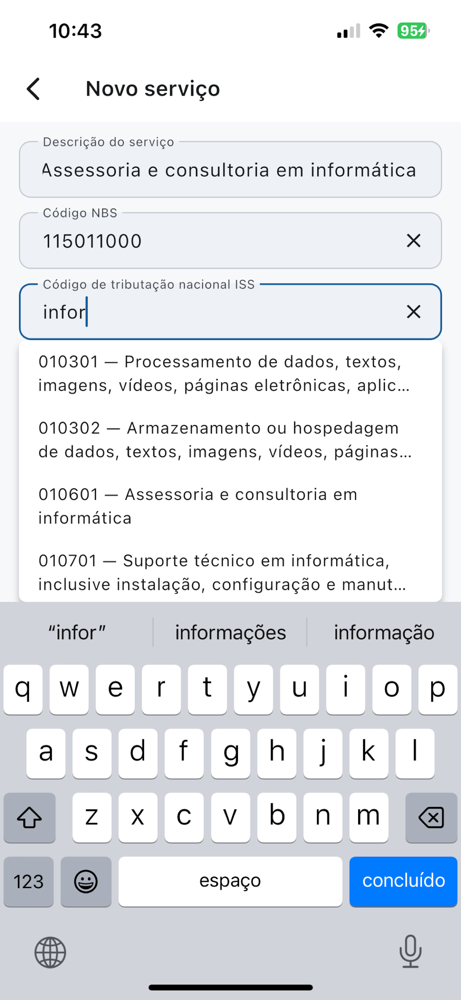
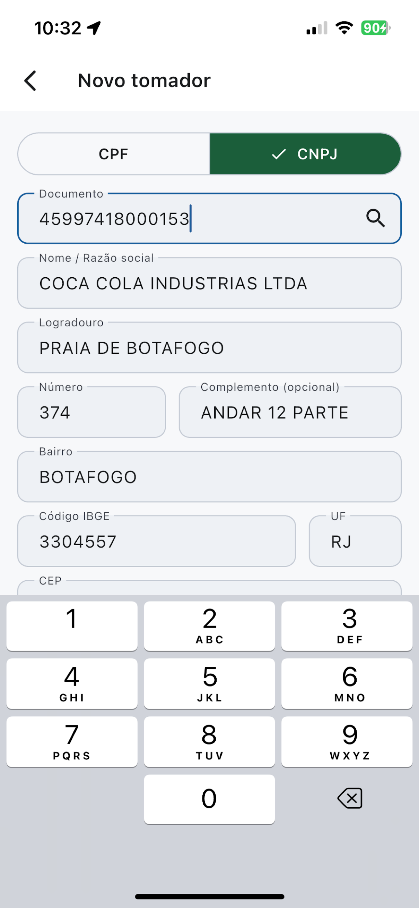
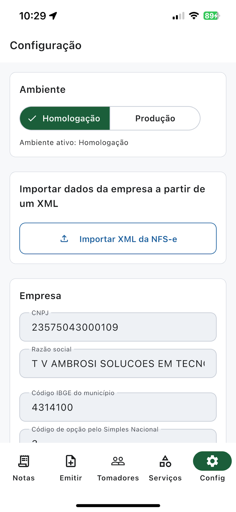

Android
Google Play
Em breveFeito para prestadores de serviço do Simples Nacional. Emita, consulte, cancele e baixe o DANFSE sem depender de portal web nem de webservice municipal.

Informe os dados do prestador e envie seu certificado digital A1.
Clientes e serviços favoritos, com código NBS, tributação do ISS e valor padrão.
Envie a DPS, acompanhe o status e compartilhe o DANFSE em PDF.


